往年 车辆 年审 报告 （ Vehicle Annual Review Report ）
车辆 年审 报告 ：大众高尔夫4，1.8L，出厂日期为03年11月，上牌日期为05年2月。更换三元催化是在17年12月7日，原车三元催化内部为陶瓷的，碎的渣都不剩。安装的是宝来 1.8t三元催化改装的。文章中的报告就是从这时候开始的，同时包括了审车流程。
第一份是在2017年12月8日：
里程：125476km。上次审车手续只用了行驶证（以前都是需要行驶证，登记证书，保单），先去办理车辆检测登记和缴费。你会拿到缴费收据，机动车牌证申请表，信息登记外检表，安全技术检验表。拿着这些表，就可以将车开到外检区，准备好警示三脚架，配合检验人员做好灯光，雨刮，车窗的检验（有的检测站不需要你做，登记完只需要在休息室等待）。如果有不合格，需要你去检修，检修完成在回来接着检测。
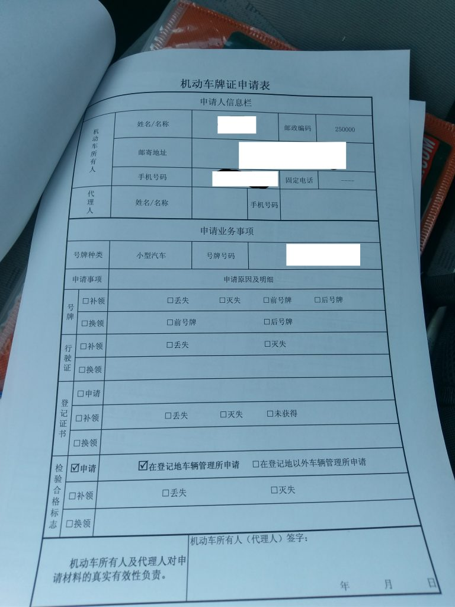
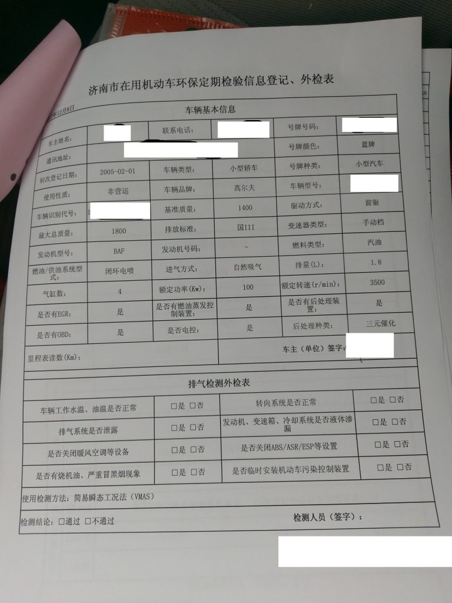
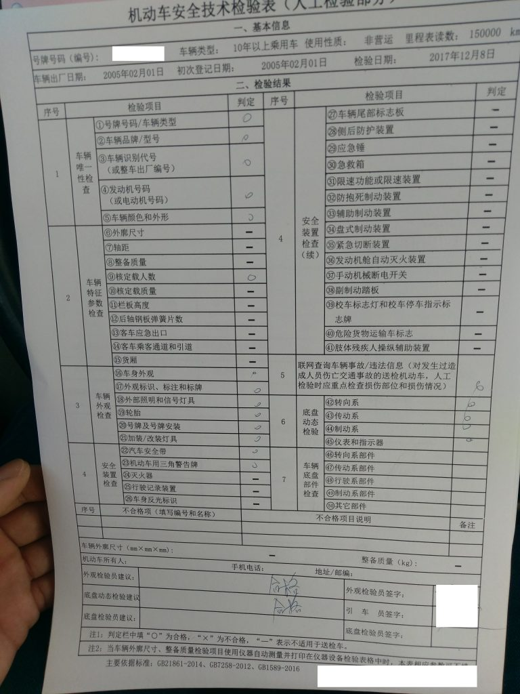
外检完成后，检测员试车，然后你就需要将车开到尾气检测区。如果尾气不合格，同样要去检修后，在重新检测。（为其报告的打印要等到全部流程完毕后在到相应的柜台打印）排放污染物主要为一氧化碳、碳氢化合物、氮氧化合物(NOx)、二氧化硫、铅、碳微粒和其他杂质粉尘等。
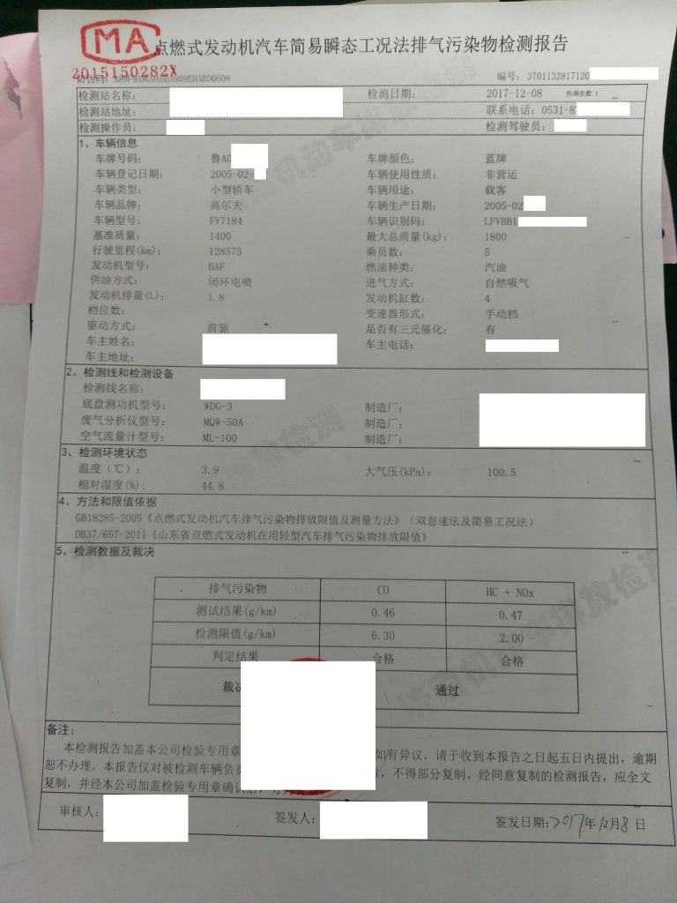
尾气合格后，将车开到最后的一个检测区，在这里会检测车辆底盘，灯光亮度，四轮制动等。
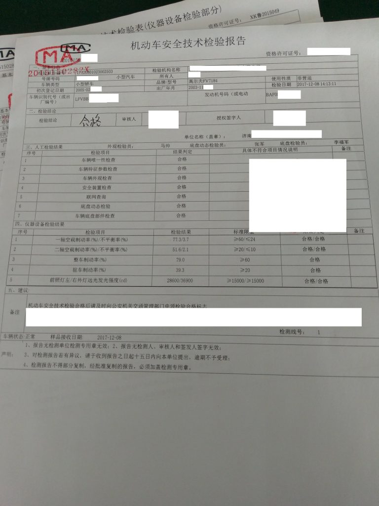
全部通过后，去前台打印相关的报告，等待上传资料的审核，然后打印年检标志。
第二份是在2018年12月4日：
里程：139601km。
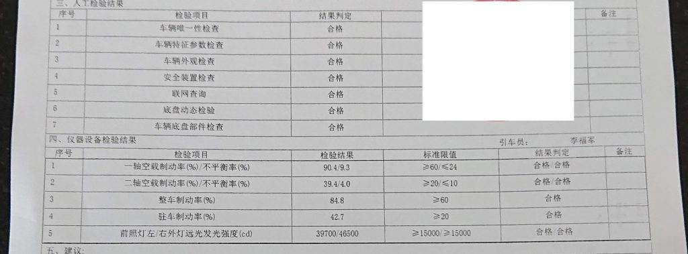
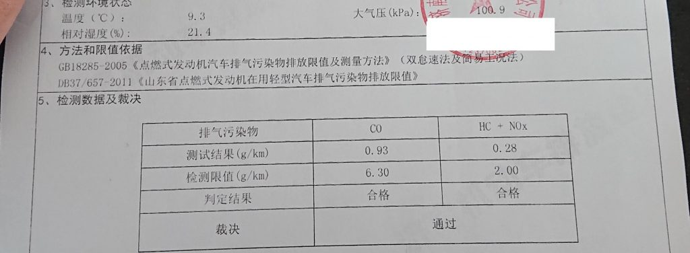
第三份是在2020年1月6日：
里程：156478km。
检测费用：253元。报告样式和前几次不同，灯光和地盘的 报告分开打印了，尾气报告增加了OBD检测，内容增加到两页。
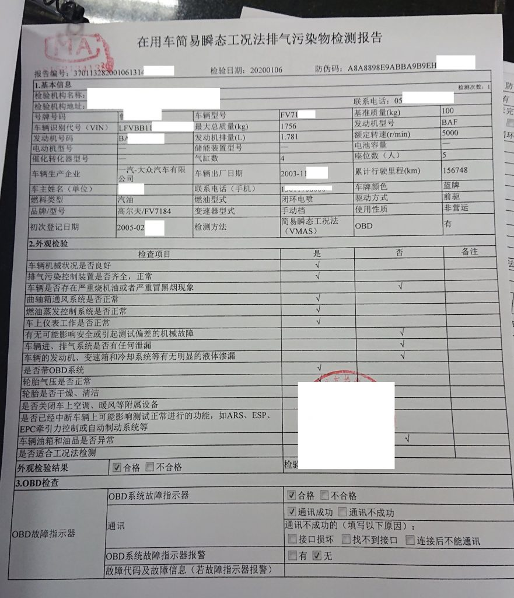
尾气报告第一页
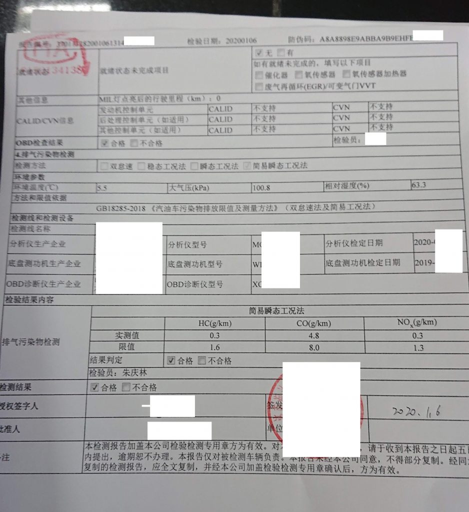
尾气报告第二页
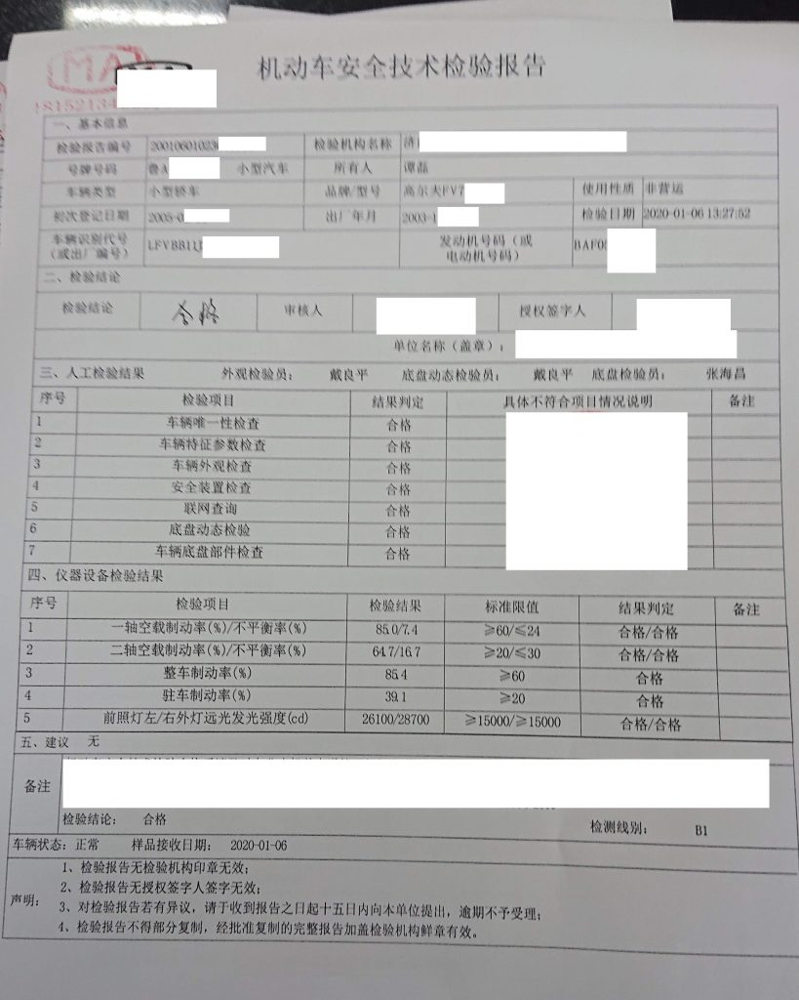
制动报告
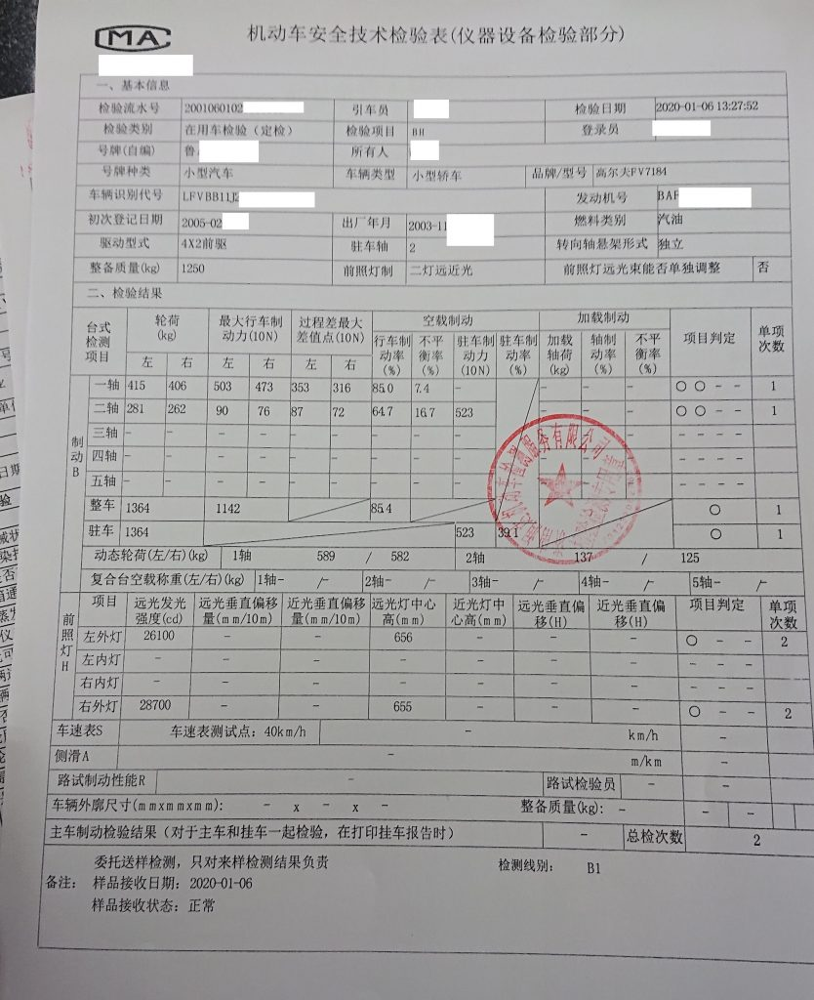
灯光报告
更多汽车信息请点击：
https://tl8517.com/category/car-sick/
MK4 1.8 加速无力 怠速抖动：
https://tl8517.com/severe-jitter/
年审百度百科：